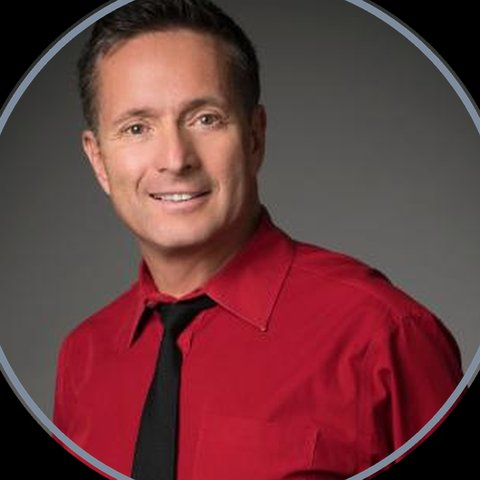
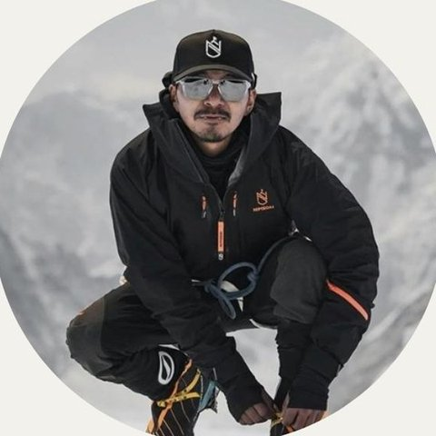

10 DECEMBER · SPORTS EQUITY LAB, STANFORD · 11 DECEMBER · ONLINE
Where frontier science meets the people who live at the limit
Two days to find out which of your limits are real, which can move, and what becomes possible when you know the difference.
2 days
50 seats in the room
1 question
∞ online, worldwide
What is The Human Edge?
Not a conference. A salon at the edge of what humans can do
In one room at Stanford: scientists who measure human limits in the lab, athletes and climbers who test them at altitude, and founders and leaders who meet them every day while building something new.
For one day they share one table and one question, and on the second day the conversation opens up online: where is the real human edge?
Human potential is not limitless. But we often misunderstand where our limits actually are. Some limits are physical. Others are psychological.Some are shaped by our environment. And some exist only because we haven’t found another way yet.

The mix
Evidence for the mind. Experience for the gut. Questions for the soul.
01
The science
Frontier research on the body, the mind and the environment, explained by the people doing it.
02
The experience
Stories and data from people who operate where the air runs out: at altitude, in elite sport, in building companies.
03
You
Space to measure, notice and question your own patterns, and leave with one change truly worth making.
What to expect
Two days to test your limits against the evidence
14
voices of science & record-holders
1
private screening of the Everest film
50
seats in the room, ∞ online
2
days: one at Stanford, one online
Day 1 · 10 Dec · In the room at Stanford
- Evening reception with speakers and guests
- Private screening of the Everest sea-to-summit film
- 4 talks and conversations, at round tables
- VIP: dinner with the speakers
- Plus the online day and all recordings
Day 2 · 11 Dec · Online on Zoom
- A full day of live lectures and conversations with the speakers
- Ask the speakers your questions live
- Recordings of the Stanford talks and the online day
Come curious. Leave with something you can change.
Speakers
The lab meets the field
Science

Dr. Yetsa A. Tuakli-Wosornu, MD, MPH
Associate Professor, Stanford · Founding Director, Sports Equity Lab
Sports medicine physician-scientist and former professional athlete. Chairs IOC committees.

Dr. Irina Zelenkova, MD, PhD
Founder, OWNTOP Human Performance Center · Sports Equity Lab, Stanford
High-altitude performance scientist. Designed the pre-acclimatization programme behind the Everest sea-to-summit record.

Prof. Evert Verhagen
Full Professor, Amsterdam UMC · Senior Expert Health & Performance, UEFA
Leading researcher in sports injury prevention. Directs UEFA’s medical research on player health.
Prof. Yannis Pitsiladis
Director, CESAME · Hong Kong Baptist University
Expert in genetics and human performance. Built the largest known DNA biobank of world-class athletes.
Medicine at the edge

Geoff Tabin, MD
Stanford Medicine · Everest East Face, 1983
Member of the first-ascent team on Everest’s East (Kangshung) Face. Co-founder, Himalayan Cataract Project.
Peter Hackett, MD
Altitude medicine pioneer · Institute for Altitude Medicine
Foundational research on high-altitude pulmonary and cerebral edema (HAPE, HACE).
Ken Zafren, MD
Clinical Professor of Emergency Medicine, Stanford
Associate Medical Director, Himalayan Rescue Association. Former Medical Director, Denali mountaineering rangers.
Eric A. Weiss, MD
Professor of Emergency Medicine, Stanford
Founder, Stanford Wilderness Medicine Fellowship. Medical advisor, National Geographic Society.
People who live at the edge

Mingma David Sherpa
Co-founder & Director, Elite Exped
First winter ascent of K2 (2021). Youngest to climb all 14 eight-thousanders (age 30). 100+ rescues.
Andrew Ushakov
Structural engineer, entrepreneur · Everest world record holder
Fastest sea-level-to-summit ascent of Everest: 3 days 23 h 7 min from New York (May 2025).
Nikol Kovalchuk
High-altitude mountaineer · Entrepreneur
First Russian-American woman to complete the 14 eight-thousanders and the Seven Summits (2025).
Scott Parazynski, MD
NASA astronaut · Stanford B.S., M.D.
The only person to both fly in space and summit Everest (2009).
Connor Herson
Stanford student · big-wall free climber
Free-climbed El Capitan’s Nose at 15.
Alan Yeung, MD
Stanford Initiative for Entrepreneurial Resilience
Helps lead SIER, which hosted Geoff Tabin’s campus talk on the East Face ascent.
Tickets
Be in the room, or online
Day one is in the room at Stanford, for 50 people. Day two is online on Zoom, open to everyone. The talks from the room are recorded for every pass holder.
On demand
Library Pass
$ 99
- Recordings of the Stanford talks and the online day
- Watch at your own pace
Live online
Online Pass
$ 149
- The online day on Zoom, 11 December
- Live Q&A with the speakers
- Recordings of the Stanford talks included
In the room · Stanford
Salon Pass
$ 950
- Day one at Sports Equity Lab, Stanford
- Plus the online day on Zoom
- Live demonstrations and measurement
- Round tables with speakers and guests
- Recordings included
In the room · Limited
VIP Salon Pass
$ 3 500
Only 10 seats
- Everything in the Salon Pass
- An intimate dinner with the speakers
- Seats at the front tables
- A personal measurement session or one-to-one debrief
- Priority access to the 2027 edition
Coming with your team? Groups of 3 or more save 15%. Ask about team passes.
The venue · Stanford University
Sports Equity Lab


Sustainable High Performance at Sports Equity Lab, Stanford University.
Good questions
We’ve tried to answer the obvious ones. Anything else: write to us.
Do I need a science background?
No. Every session is built for curious, intelligent people from any field.
What language is it in?
English.
I’m in another time zone. Will I miss it?
No. Every pass includes recordings of the talks from Stanford and of the online day, so you can watch whenever suits you.
Can my company send a team?
Yes, and we’d love that: what changes one person can change a whole team. Groups of 3 or more save 15% on any pass. Write to us and we’ll set up your team booking.
What is the refund policy?
All sales are final: tickets are non-refundable. In-person passes can be transferred to another person until 48 hours before the event. If we cancel the event, you get a full refund.